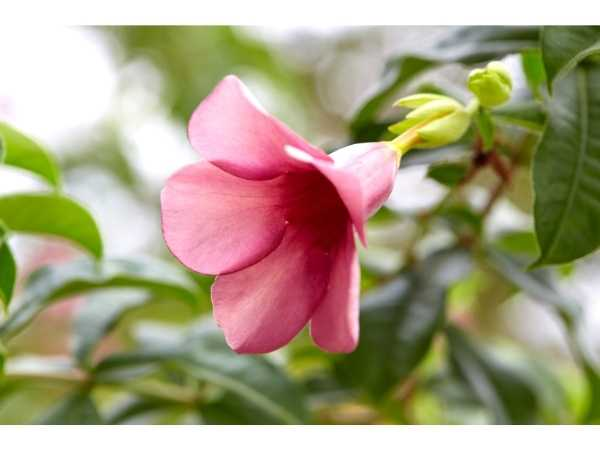
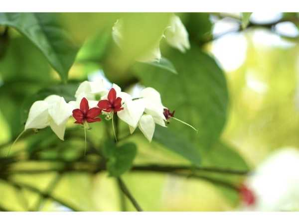
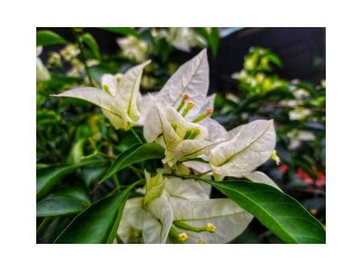
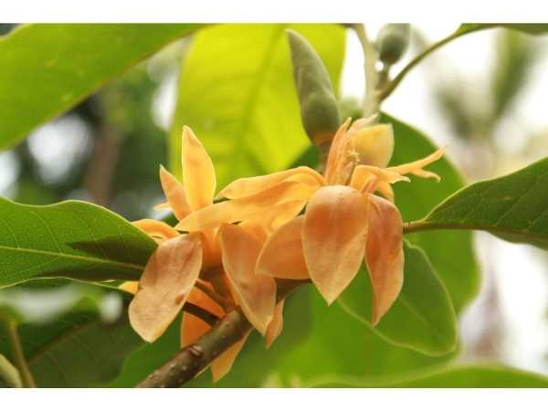

🌸 Flowering Plants
Fragrant and beautiful flowering plants from ArkFarm.

Allamanda - Purple
Allamanda blanchetii
Tropical shrub with large purple trumpet flowers; ornamental climber for fences and pergolas.

Allamanda - Yellow
Allamanda cathartica
Golden trumpet vine with large bright yellow flowers; popular ornamental for tropical gardens.

Bleeding Heart
Lamprocapnos spectabilis
Shade-loving perennial with iconic heart-shaped pink and white flowers.

Bougainvillea - Red
Bougainvillea spectabilis
Vigorous thorny climber with brilliant red bracts; one of the most popular ornamental vines.

Bougainvillea - White
Bougainvillea spectabilis
White-bracted bougainvillea with elegant appearance; popular for arches and garden walls.

Butterfly Pea Flower
Clitoria ternatea
Blue-flowered climber used for natural food colouring, herbal tea, and traditional medicine.

Champak
Magnolia champaca
Sacred fragrant tree with intensely aromatic golden-yellow flowers used in perfumery and religious offerings.

Cypress Vine
Ipomoea quamoclit
Delicate feathery vine with star-shaped scarlet flowers; attracts sunbirds and hummingbirds.

Gold Shower / Thryallis
Galphimia glauca
Drought-tolerant evergreen shrub with year-round bright yellow flowers.

Heliconia - Golden Torch
Heliconia psittacorum
Complete guide to Heliconia (Heliconia psittacorum) at ArkFarm.

Hibiscus - Red
Hibiscus rosa-sinensis
Tropical shrub with large red flowers; used in herbal tea, hair care, and traditional medicine.

Jasmine
Jasminum sambac
Beloved fragrant flowering plant used in garlands, perfumes, and tea.

Manoranjitham
Artabotrys hexapetalus
Climbing ylang-ylang with intensely fragrant flowers; used in perfumery and garlands.

Paneer Rose
Rosa damascena
Highly fragrant damask rose used in perfumery and traditional medicine.

Petrea Creeper
Petrea volubilis
Woody vine with cascading purple flower clusters; blooms profusely in warm seasons.

Rain Lily
Zephyranthes candida
Complete guide to Rain Lily (Zephyranthes candida) at ArkFarm.

Touch Me Not Plant
Mimosa pudica
Sensitive plant whose leaves fold when touched; used in traditional medicine for skin conditions.